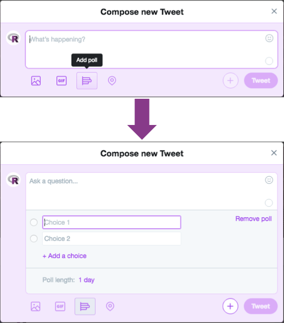

library(dplyr)
r-users %>%
filter(team == 'r-ladies')A Map Countries that have R-Ladies Chapters
The R-Ladies RoCur (RoCur = Rotating Curation) is a rotating curation twitter handle, @WeAreRLadies, that will feature an awesome R-Lady each week. This account is run by R-Ladies Global.
R-Ladies is a worldwide organization whose mission is to promote gender diversity in the R Community. Our primary focus, therefore, is on supporting minority gender R enthusiasts to achieve their programming potential, by building a collaborative global network of R leaders, mentors, learners, and developers to facilitate individual and collective progress worldwide.
Every week, a different R-Lady takes over our twitter account to talk about the work they do in R. Featured curators come from a diversity of professions and have a range of experiences in R, from novice to expert.
If you are interested in becoming a curator, see our Be a Curator section and sign up here.
Check out @WeAreRLadies every Monday for a new curator!
Here is the current schedule of featured curators.
| Week | Speaker | Affiliation | |
|---|---|---|---|
| 16-Jul-18 | RLadies Global (SAMPLE) | Sample Position and Affiliation | RLadiesGlobal |
| 23-Jul-18 | OPEN | OPEN | OPEN |
| 30-Jul-18 | OPEN | OPEN | OPEN |
| 6-Aug-18 | OPEN | OPEN | OPEN |
| 13-Aug-18 | OPEN | OPEN | OPEN |
| 20-Aug-18 | OPEN | OPEN | OPEN |
| 27-Aug-18 | OPEN | OPEN | OPEN |
| 3-Sep-18 | OPEN | OPEN | OPEN |
| 10-Sep-18 | OPEN | OPEN | OPEN |
| 17-Sep-18 | OPEN | OPEN | OPEN |
| 24-Sep-18 | OPEN | OPEN | OPEN |
| 1-Oct-18 | OPEN | OPEN | OPEN |
A page with curator bios and an archive of past curators will be up soon!
We are always looking for R-users to be a featured curator for our account! Everyone is welcome; R-Ladies encourages R-users of all professional backgrounds and experience levels to curate this account. Additionally, individuals do not need to be affiliated with R-Ladies to curate. Featured curators must meet the following criteria:
Individuals may sign up to be a curator via this form.
By signing on to be a curator of @WeAreRLadies you agree to the following:
Abide by R-Ladies’ Code of Conduct in all activity and interactions you have on the @WeAreRLadies account.
Be the sole tweeter of @WeAreRLadies for the week that you are assigned.
Don’t change the photo, biography, background or theme of the @WeAreRLadies account, unless expressly directed to do so (e.g. changing the profile photo at the start of your week).
Provide a profile photo which may be used during your week, and some background information on yourself, including research and interests, for the @WeAreRLadies blog/website.
All content posted during your week is your responsibility. That said, the @WeAreRLadies administrators will take action if your posts contain racism, sexism, homophobia, etc.
Refrain from using obscene or abusive language.
Don’t actively promote or advertise any business or receive remuneration from a third party to do so.
After your assigned week, remove access to @WeAreRLadies from any applications to which you may have granted access.
You may not follow, unfollow, or block any other twitter users from the account. Additionally, you may not interact with individuals via direct messages.
A curator’s access may be revoked if a disproportionate amount of followers report problems engaging with the curator, or if the curator is inactive on the account.
In the event that you receive abuse while contributing, please do block the offender if you feel it necessary. If this does occur, please send the administrators an email or via the R-Ladies Community Slack, noting the offender’s Twitter handle and a description of the offense, to weare@rladies.org.
Please follow the Twitter terms of service The administrators of @WeAreRLadies reserve the right to warn or revoke the access of anyone who violates Twitter’s terms of service or breaches any of the above rules.
Start your curatorship by introducing yourself, what you do (your job, hobbies, etc.), and what you do in R. Pin this tweet so that it stays on top of the account feed during your curation week
Suggestions on how to introduce yourself:
An example of pinning a tweet

One goal of @WeAreRLadies is to maintain a strong R-Ladies community on Twitter! Therefore, please respond to people who interact with the account.
If someone asks a question, we suggest re-tweeting their question with your response as a comment so that others can see the original question.
Other suggestions for interacting with your audience:
@WeAreRLadies is managed by R-Ladies Organizers. You can email them at WeAre@rladies.org.